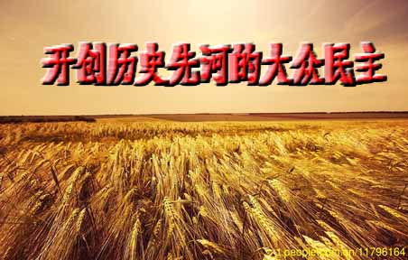
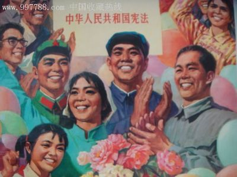
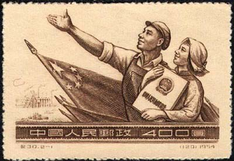

——兼论宪法设立和取消罢工自由的过程和后果
 从阶级压迫最严重的广东开始向各地蔓延的罢工浪潮，在法律和道义上把共产党置于了两难境地。
一方面，从法治的角度讲应该镇压（中国老百姓很快就会明白买办汉奸等极右势力30年来一致强调法治意味着什么），因为中国宪法没有罢工自由，罢工不受宪法保护，属于违宪重罪，按照以往逻辑应该镇压，八十年代九十年代邓小平时期一直就是这么干的，对罢工一律镇压，决不手软。这是当时外资蜂拥进入中国的根本原因。
因为禁止罢工就意味着资本家可以随心所欲地剥削工人，男工想怎么使就怎么使，女工想怎么干就怎么干，反正有武警为资本家保驾护航，资本家什么都不用愁什么都不用怕，可以把人工成本降低到最低限度，获取最大限度利润。所以中国八九十年代，才成为中外资本家数百年来最为发财的好日子，至今许多资本家提起邓小平来仍然激动得浑身发抖。资本家的激动是有道理的，禁止罢工这种资本家的梦想天堂，不仅当今世界绝无仅有，甚至在半封建半殖民地的旧中国，资本家都不敢想象。可现在居然变成了活生生的现实，共产党立法禁止罢工，并且动用武警对付罢工，所以全世界资本家百分之百地振臂高呼：中国改革开放万岁！此前我们就曾多次指出，当今中国经济既非计划经济，也非市场经济，而是典型的武警经济和保安经济，工人个人反抗有保安，集体反抗有武警，除了自杀之外没有任何出路，这就是富士康“十三跳”、工人连续跳楼自杀的根本原因。可以说，武警制度和保安制度是中国经济增长最根本的制度。动用武警对付罢工已成为中国改革开放的习惯做法。
但是另一方面，从道义的角度讲又不能镇压罢工，不仅不应该镇压，反而应该支持。道理很简单，中国共产党是工人阶级的先锋队，是工人阶级的政党，工人阶级的政党怎么能够镇压工人罢工？况且，当今中国已经不是八九十年代，人民的觉醒和政治文明的发展，都不允许用武力对付工人罢工。有人说甚至包括左派内部都有人说，邓小平动用武力不是照样能行，不是照样连个屁都没人敢放？只是这些人根本不懂得，邓小平当初动用武力能够成功，不是因为邓小平特别有本事，而是在吃毛主席的老本，在消费毛主席的政治储蓄。中国老百姓把毛主席领导的共产党视为爹娘，如同歌里唱的那样“我把党来比母亲”，母亲打孩子就算是下手重些往死里打，老百姓也能够忍受。历史一直在告诉老百姓，共产党是自己的亲爹娘，绝不会让老板经理欺压自己，绝不会让资本家骑在自己头上作威作福。就是凭着对共产党这种信念，当时无论共产党怎么做老百姓都仍然支持共产党。可是现在，邓小平早已把毛主席的政治储蓄透支得干干净净，再象八九十年代那样用武力对付工人罢工，老百姓断然不会接受，如果强行动用武力，估计执政党和共和国会同时陷入灭顶之灾。 可见，八十年代废除宪法中的罢工自由，给当今中国共产党和中华民族带来了何等巨大的政治灾难！
新中国成立后，1956年制订中华人民共和国第一部宪法（即“五六宪法”）时，毛主席就主张把罢工自由写进了宪法。当时有人想不通，认为新中国是公有制企业，工人是企业的主人，罢工岂不是罢自己的工，是自己与自己进行斗争？对此毛主席曾多次解释，罢工是工人反对官僚主义的有力武器，凡是有工人罢工的地方，一定是有官僚主义作怪，这样就可以发现和打击那里的官僚主义。毛主席从来就不认为罢工工人是有过错的一方和应该承担责任的一方，始终站在工人立场上认为罪错只能是与罢工工人相对立的一方。所以尽管是在公有制条件下，是在工人是企业主人翁的条件下，毛主席仍然坚持宪法要赋予工人罢工自由的权利。
后来在六七十年代的文化大革命期间，为进一步保障工人阶级和广大人民群众的政治权利，1975年修改宪法（即“七五宪法”）时，又在罢工自由的基础上，增加了大鸣大放大字报大辩论的四大自由。由此而形成的中华人民共和国宪法，在自由民主等公民权利方面，远远超越了世界上任何一个国家，特别是超越了西方资本主义国家。可以说，以四大自由为代表的大众政治文明，是超越以往历史上君主文明和宪政文明的迄今为止最高的政治文明（君主政治文明、宪政政治文明、大众政治文明，是从低级向高级排列的历史顺序），是人类历史上民主政治的最高形式，是与网络社会相适应的取代精英政治的大众政治，是中华民族复兴对世界政治文明的伟大贡献。可以说，中国七五宪法中四大自由对世界的历史贡献和深远影响，绝不亚于四大发明对世界的历史贡献和深远影响。 可是，如同历史上所有伟大事物都是在曲折中发展的一样，以四大自由为代表的大众政治文明同样遭受到重大挫折。文革结束后，大鸣大放大字报大辩论的四大自由，被中国官僚集团和知识分子踩在脚下，跺着脚的拼命咒骂和批判，将其定性为人类历史上最野蛮浩劫。1982年修改宪法（即“八二宪法”）时，罢工自由连同四大自由，在官僚集团和知识精英咬牙切齿声的咒骂声中，被当作法西斯罪行从宪法中统统取消（同时从宪法中取消的还有惩办卖国贼条款，显然是有人为日后卖国在做法律准备）。当时以及此前此后那些捍卫四大自由和罢工自由的人，通通作为四人帮的残渣余孽和“三种人”，被投入监狱或者遭到各种审查处理，全国共涉及到数千万人。就是在这种阶级专政和政治恐怖的背景下，形成了全面剥夺自由民主权力的“八二宪法”。“八二宪法”取消四大自由，在政治上满足了官僚集团的要求；取消罢工自由，在经济上满足了中外资本家的要求；取消惩办卖国贼条款，在法律上满足了汉奸买办的要求。这三个方面基本上消除了改革开放的政治和法律障碍，中国历史上第三次改革开放由此轰轰烈烈地开始了。
如果说，取消四大自由和惩办卖国贼条款，还可以用所谓清除“极左”来解释的话，那么取消罢工自由则有些明目张胆地复辟和倒退了。因为罢工自由是工人阶级浴血奋斗数百年才争取到的政治权利，连西方资本主义国家都不敢取消罢工自由，当今世界所有资本主义国家的工人阶级都拥有罢工权利，而在改革开放的社会主义中国却变成了违宪重罪，无论以什么理由都说不过去。虽然中国工人阶级接受了这个现实，甘愿中国成为全世界宪法禁止罢工的唯一国家，但是整个世界却无法接受中国禁止罢工的历史倒退，于是中国便由原来占据自由民主的道义制高点的国家，变成了全世界文明法庭上的道义被告，30多年来一直备受道义谴责。原本在世界上最为自豪的中国工人阶级，也由在企业当家作主的主人翁地位，变成了全世界最没有地位和权力的弱势群体，成为全世界工人阶级同情和可怜的对象。 而当时邓小平解释取消罢工自由的理由，更是匪夷所思、荒谬绝伦，超出了正常人的理解能力，他是这样解释的:“中国是工人阶级领导的国家，罢工会损害工人阶级的利益，所以必须禁止罢工。”这就如同在说，你是你们家主人，吃饭睡觉会损害你们家利益，所以禁止你在家吃饭睡觉。况且，在国际资本涌入中国、国内资本也蓬勃发展的条件下，工人阶级已不再是企业主人翁，而成为与资本相对立的弱势群体，罢工是工人反抗资本的唯一手段，禁止罢工等于是剥夺了工人最基本的政治权利。在劳资严重对立的私有化情况下，宪法取消罢工自由，动用武警对付罢工，怎么能说是在维护工人阶级的利益？
然而，这就是中国改革开放的基本逻辑，不仅在取消罢工自由方面，在其它任何方面也都是这个逻辑。后来邓小平自己也发现这个逻辑说不通，便创建了“不争论”这个中国特色社会主义的所谓新发明，那些右派一看这个“不争论”是伤天害理的最好挡箭牌，便把“不争论”列入邓小平理论的重要组成部分，抬高成为改革开放的最高原则。于是，扒房子圈地、工人下岗、废除住房医疗教育等福利保障……所有这些人类编年史上的惨烈悲剧，就此拉开了大幕，中国底层的劳动群众，再次落入了数千年的历史轮回。 执政的中国共产党也落入了越来越被动和危险的政治泥潭，陷入了疲于奔命的维稳陷阱。取消四大自由为代表的大众民主，对共产党可以说是双重绝杀。一方面，人类历史上只有三种民主形式，即权力民主、资本民主和大众民主。这三种民主的历史顺序是依次排列的，资本民主高于权力民主，大众民主高于资本民主。否定了大众民主，共产党在与资本民主的斗争中，自然就被放在了比资本民主还要落后的权力民主的历史位置上，在客观上变成了落后的专制力量。这是许多青年人在信仰上放弃共产党而盲目信仰西方的一个主要原因。另一方面，取消了大众民主，剥夺了人民大众的基本民主权力，与人民大众的对立不断加深，在政治上断绝了共产党的力量源泉，这就迫使共产党只能依赖官僚、资本和知识分子组成的精英集团，被精英集团牵着鼻子走。由于精英集团的最终目的是让共产党下台而共产党又不愿意下台，不愿意下台的共产党又失去了自己的政治力量和阶级基础，在政治上已经被精英集团所绑架，所以尽管一再声称绝不走西方邪路，仍然被精英集团绑架着越走越远。这是近两年来共产党与右翼精英集团矛盾越来越尖锐的政治根源。 比取消四大自由更加让共产党陷入历史被动的是取消罢工自由，取消罢工自由的直接政治后果，除了把工人阶级变成任凭资本家随意欺凌的弱势群体之外，就是把原本属于劳资之间的矛盾，变成了政府与劳动群众之间的矛盾，并且许多地方政府为了避免引发其它企业的连锁反应，强令罢工企业不准向工人让步，不准答应罢工工人的要求，这就造成政府与劳动群众之间的矛盾，比原有劳资矛盾更加尖锐，官民对立越来越紧张。薄××去重庆任职前，重庆专门购买了装甲车沿街巡逻，对付工人罢工等群体事件。薄××上任后，把装甲车锁进了库房，首开用谈判解决全市出租车大罢工的先河，还下令武警调转枪口，持枪替工人讨薪。这本来是共产党和共和国转危为安的唯一出路，应该推向全国并由此在事实上恢复工人的罢工权力，以后再修改宪法恢复罢工自由，进而恢复以往那种水乳交融的党群关系。可惜天公不作美，阶级斗争不以人的意志为转移，随后发生的重庆事件很快就堵塞了这条摆脱危机的必由之路。 结果就是，中国仍然是罢工违宪的国家，罢工仍然是违宪重罪。这就从一开始即把罢工工人放到了违法犯罪的极端地步，逼迫工人只能更加走向极端。这样一来，国家要维护宪法尊严禁止罢工，工人要维护自身权益坚持罢工，如此不可调和地对立下去，社会焉能实现和谐稳定？所以当务之急就是，在罢工浪潮即将蔓延开来之时尽快恢复罢工自由，给工人留有缓和余地。倘若能够同时恢复四大自由和惩办卖国贼条款，那么中国将会象俄罗斯那样即刻化解各种危机，顺利走向中华民族伟大复兴。